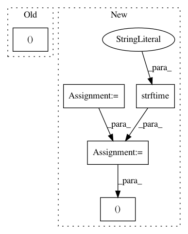

06cd615e6c10e4fc7ebf9b7df3bbfbb74e6c9ac3,pynets/registration/reg_utils.py,,wm_syn,#Any#Any#Any#,247
Before Change
regtools.overlay_slices(static, warped_moving, None, 1, "Static", "Moving",
"%s%s" % (working_dir, "/transformed_coronal.png"))
regtools.overlay_slices(static, warped_moving, None, 2, "Static", "Moving",
"%s%s" % (working_dir, "/transformed_axial.png"))
return mapping, affine_map, warped_fa
After Change
warped_moving = mapping.transform(moving)
// Save warped FA image
run_uuid = "%s_%s" % (strftime("%Y%m%d_%H%M%S"), uuid.uuid4())
warped_fa = "{}/warped_fa_{}.nii.gz".format(working_dir, run_uuid)
nib.save(nib.Nifti1Image(warped_moving, affine=static_affine), warped_fa)
// We show the registration result with:
regtools.overlay_slices(static, warped_moving, None, 0, "Static", "Moving",
"%s%s%s%s" % (working_dir, "/transformed_sagittal_", run_uuid, ".png"))
regtools.overlay_slices(static, warped_moving, None, 1, "Static", "Moving",
"%s%s%s%s" % (working_dir, "/transformed_coronal_", run_uuid, ".png"))
regtools.overlay_slices(static, warped_moving, None, 2, "Static", "Moving",
In pattern: SUPERPATTERN
Frequency: 3
Non-data size: 5
Instances
Project Name: dPys/PyNets
Commit Name: 06cd615e6c10e4fc7ebf9b7df3bbfbb74e6c9ac3
Time: 2019-11-30
Author: dpisner@utexas.edu
File Name: pynets/registration/reg_utils.py
Class Name:
Method Name: wm_syn
Project Name: thenetcircle/dino
Commit Name: e1c9adbe1190fcd919d66219eceb7301597bdad2
Time: 2018-09-11
Author: oscar.eriks@gmail.com
File Name: dino/db/manager/spam.py
Class Name: SpamManager
Method Name: find
Project Name: thenetcircle/dino
Commit Name: 9591f3d41c416856ddb33be82694e2b2161852e6
Time: 2018-09-11
Author: oscar.eriks@gmail.com
File Name: dino/db/manager/storage.py
Class Name: StorageManager
Method Name: find_history